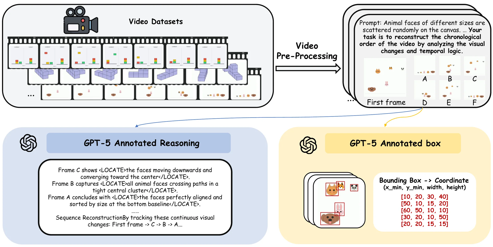
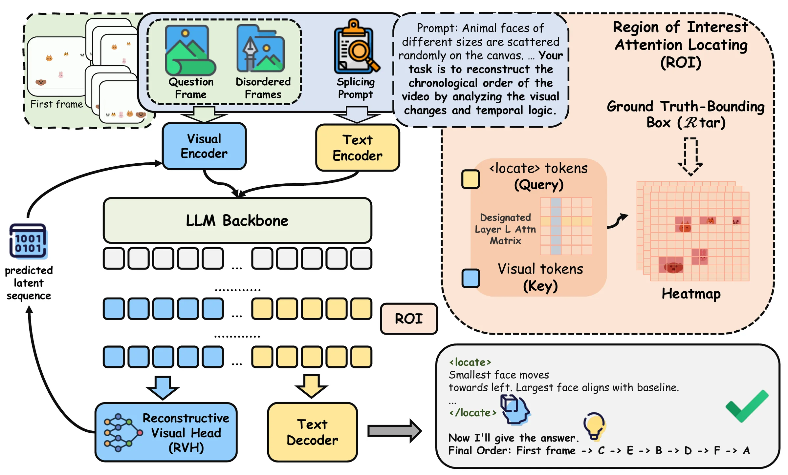
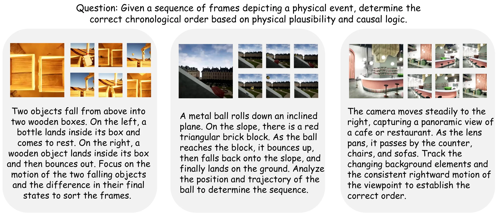
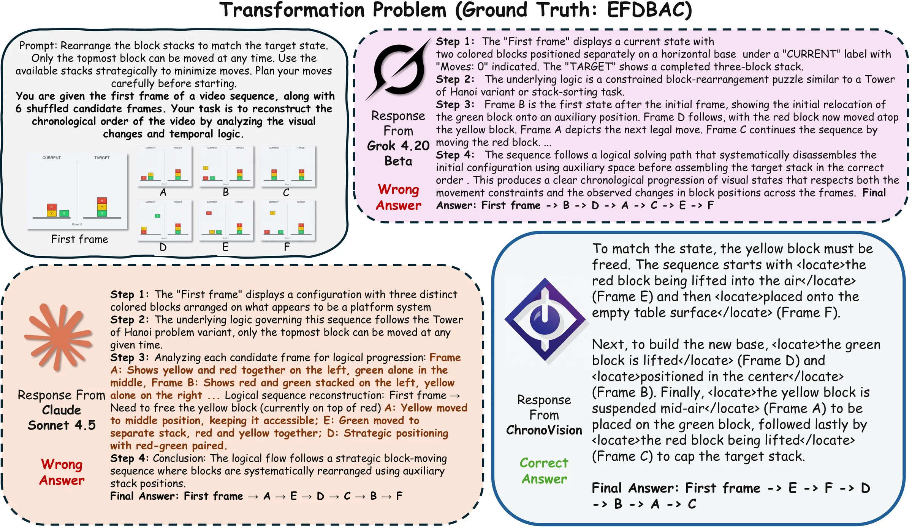
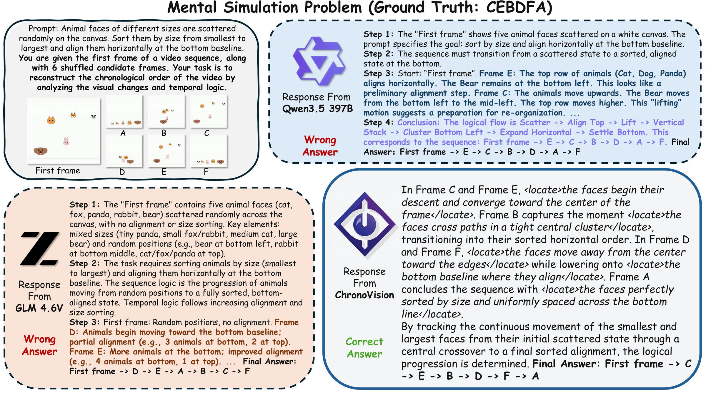
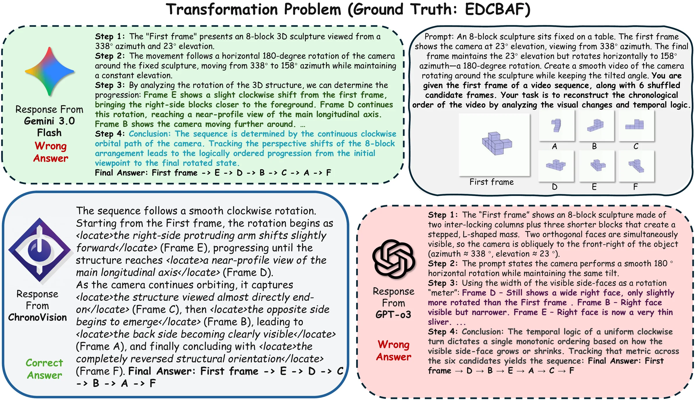

ChronoVision: Temporal Reasoning via Latent State Reconstruction
1University of Illinois Urbana-Champaign 2PediaMed AI 3University of Pennsylvania
Multimodal models can describe every frame of a video. Can they tell which frame comes next?
We introduce ChronoVision, a framework that lets an MLLM reason about time by reconstructing the final visual state in its latent space. A Reconstructive Visual Head predicts what the end of the event should look like, an ROI attention module points the model at the regions that change, and reinforcement learning rewards rationales that stay grounded in both. To test this without language shortcuts, we build Vbvr-VQA, which turns video reasoning into putting six shuffled frames back in order.

Key takeaways
- 01Putting frames in order is hard for today's MLLMs. The strongest baseline, Claude Opus 4.6, reaches 55.8 overall exact match; our 9B backbone, Qwen3.5-9B, gets 14.2. With 720 possible orders and no answer options to read, wording alone cannot carry the model.
- 02Reconstructing the final state helps. Adding the Reconstructive Visual Head (RVH) to supervised fine-tuning gives +3.2 in-domain and +2.8 out-of-domain; ROI attention locating adds another +1.2 overall.
- 03Rewarding the process, not just the answer, compounds the gain. GRPO with outcome, latent-grounding and focus rewards lifts ChronoVision to 73.2 overall (74.8 in-domain, 71.6 out-of-domain). Dropping any reward term costs 1.4 to 3.4 points.
- 04The reconstructed state is used, not a shortcut. It converges to the true final frame only on correct runs, noise injected mid-reasoning derails it, patching it moves the probability of the right order, and a linear probe reads the order out with accuracy rising from 18.4% to 74.1% as reasoning unfolds.
- 05It transfers to real video and keeps general skills. ChronoVision scores 55.0 on IntPhys 2, 45.89 on Video-Holmes and 74.7 on LongVideo-Reason, while staying within 2 points of its backbone on seven general benchmarks.
Vbvr-VQA
Multiple-choice VQA lets a model guess from the wording of the question or the options. Vbvr-VQA removes that shortcut: every question is an ordering problem built from a video in the open-source Very Big Video Reasoning (VBVR) suite. The model must output the exact permutation of six frames, so an answer counts only if every frame is in the right place.
Take a reasoning video
From 100 VBVR task generators: mazes, physics, rotations, puzzles.
Cut it into six segments
Equal length along time; keep the last frame of each.
Shuffle the frames
Relabel them A to F in random order as the candidate set.
Recover the order
Given the first frame and the prompt, output the full sequence.
01Splits and annotations
Training uses 1M ordering samples processed from the VBVR training set. The test set has 500 questions: 250 in-domain, whose task types appear in training, and 250 out-of-domain, drawn from task generators the model never sees. Train and test are generated with different random seeds, and human annotators reviewed all 500 test questions.
For grounding, GPT-5 writes a reasoning trace for each training sample with <LOCATE> cues that
name the region changing in each frame, plus bounding boxes of those regions. GPT-5 is given the true order and
only explains it: the order itself always comes from the video's timeline.

<LOCATE> cues and boxes around the regions that change.ChronoVision
Words are a lossy way to describe a continuous change: try narrating a 3D rotation or a bouncing ball precisely enough to order its frames. People instead imagine how a scene will unfold. ChronoVision gives the model a version of that ability: alongside its text reasoning it reconstructs the final visual state in latent space, and it learns to look at the regions that change. Reinforcement learning then rewards reasoning that stays consistent with both.

<locate> tokens onto the regions that change.The Reconstructive Visual Head: picture the ending first
Knowing where an event ends constrains the order of everything before it. The Reconstructive Visual Head is a two-layer MLP that runs in parallel with the text decoder. It reads the hidden states of the candidate-frame tokens and predicts the frozen visual encoder's token sequence for the final frame. Because those hidden states are conditioned on the reasoning so far, the prediction becomes a running visual hypothesis that sharpens step by step.
Reconstruct the final state
The model learns to write the order and, jointly, to predict the latent of the last frame, the frozen visual encoder's unpooled embedding of it.
Attend where things change
Before answering, the model writes a short <locate> cue. At one intermediate layer, attention from
those tokens to the first frame is pushed into the ground-truth box of the changing region.
Implicit process grounding
A composite reward needs no extra labels: exact-match outcome, latent grounding of each reasoning step against the candidate frames, and visual focus from low attention entropy.
Training details
Leaderboard
ChronoVision is best overall, in-domain and out-of-domain with only 9B parameters. Frontier models top out at 55.8 overall, and the same Qwen3.5-9B backbone without our training scores 14.2. Switch the view to see each category, and click a column to sort.
Partial credit: Kendall's τ
Exact match gives zero to an order with one swapped pair. Kendall's τ instead scores the share of the 15 frame pairs placed in the right relative order (×100). ChronoVision still leads in every category.
01Where it wins, and where it doesn't
For each category, the best closed model, the best open model and ChronoVision. It leads in nine of ten category columns, with the largest margin on in-domain fluid intelligence (72.3 vs 32.3).
The exception is in-domain mental simulation, where Gemini 3.0 Flash reaches 80.0 against ChronoVision's 68.0. Out of domain, ChronoVision leads there too (64.0 vs 60.0).
02Every component adds up
Plain SFT without the head reaches 66.0. The RVH adds +3.0 overall, ROI attention +1.2, and GRPO with the full reward +3.0, for 73.2.
Every reward term matters: removing the answer reward costs 3.4 points, the latent-grounding reward 2.2, and the visual-focus reward 1.4.
03Same backbone, same data, other methods
With the same Qwen3.5-9B backbone and identical SFT data, R1-VL and VL-Cogito supervise the reasoning process, and Latent Sketchpad adds visual latents. Each trails ChronoVision by 2.4 to 3.4 points overall.
None of them has a target for the final state, the one frame that pins down the whole order.
Is the reconstructed state really used?
A latent trained toward the last frame could, in principle, just memorize the answer and be ignored by the reasoning. We test whether the RVH prediction is built up step by step and causally used by reading it out at steps 0 to 40 of the chain of thought, averaged over 10 sampled trajectories.
Convergence
MSE between the predicted and the true final-frame latent. Correct runs converge; incorrect runs stall.
Noise injection
Gaussian noise added to the latent at step 30 of a successful run. The error jumps and never re-converges.
Latent patching
Swapping latents between correct and incorrect runs moves the probability of the correct order with the patch.
Linear probing
A linear probe on the latent predicts the in-domain order better and better as reasoning unfolds.
A wrong start
In-domain accuracy when decoding is forced to continue from an incorrect reasoning prefix.
Text reasoning still matters
In-domain accuracy when ChronoVision must output the order directly, without a chain of thought.
Together: the latent converges only when the answer is right, corrupting it derails the run, transplanting it steers the order, and its content is constructed gradually rather than fixed from the start. The full model also loses less than the no-head baseline when pushed down a wrong path (−11.6 vs −16.0), and it still needs its text reasoning to guide the latent (67.6 without CoT vs 74.8 with).
Beyond the benchmark
01Real physics, out of domain
IntPhys 2 swaps abstract puzzles for realistic scenes: objects falling into boxes, a ball hitting a block on a slope, a camera panning across a café. The model must order frames by physical plausibility, a setting where most VLMs sit near the 50% chance level. ChronoVision reaches 55.0 overall, +6.5 over Qwen3.5-9B, and +11.5 on the Easy split.

02Real-world video reasoning
On Video-Holmes, with 32 uniformly sampled frames per video, ChronoVision scores 45.89 overall, above GPT-4o (42.00) and Gemini-2.5-Pro (45.00).
On LongVideo-Reason it reaches 74.7 and is highest on all four categories: temporal, goal, plot and spatial reasoning.
03General abilities are preserved
On seven general vision-language benchmarks, ChronoVision stays within 2 points of Qwen3.5-9B. It gains slightly on MMMU, MathVista, HallusionBench and BabyVision (+1.5); the largest drop is MMBench (−1.9).
Reasoning side by side
Strong baselines write fluent, step-by-step descriptions and still break the order. ChronoVision's
<locate> cues name what changes in each frame and lead it to the right sequence.



Citation
@inproceedings{shen2026chronovision,
title = {ChronoVision: Temporal Reasoning via Latent State Reconstruction},
author = {Shen, Yifan and Xu, Jian and Li, Boyi and Zhang, Yuner and
Yu, Tianjiao and Li, Bingxuan and Yang, Houze and Wang, Rushi and
Cao, Xu},
booktitle = {Proceedings of the 2026 Conference on Empirical Methods in
Natural Language Processing (EMNLP)},
year = {2026}
}